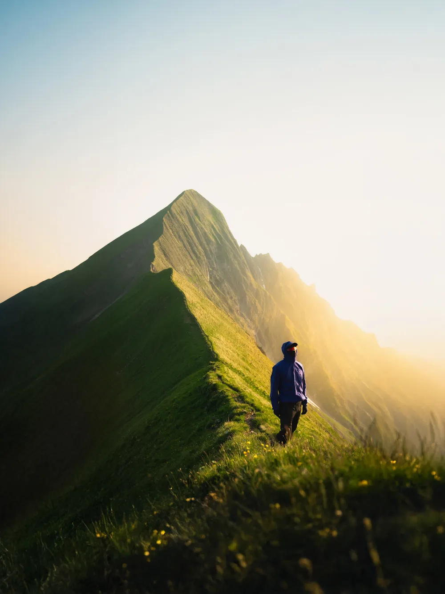

Photo · @leon.helgRIDGES
The highlight of the Hardergrat. A perfect grass ridge that peaks at sunset.
Heading west from Brienzer Rothorn, the walk to Tannhorn takes about two to three hours. It sits in the eastern third of the Hardergrat, the point where the ridge narrows to a clean line of grass with drops on both sides.
This is the best frame on the whole traverse. Sunset paints the west face warm while the east stays cool in shadow, so the ridge reads as a blade against the sky. Figure in frame gives scale.
If you shoot it at sunset, you cannot make the last cable car back. Plan to bivy on the ridge or carry on through the dark to Harder Kulm. Either way, pack for cold.
Planning · Tannhorn
Routes
Beta — the route data is still being verified. Spotted something wrong? leon@hikebeast.ch
Approach to Tannhorn
Route
Mountain hut
Cable car
Sources
Beta — the route data is still being verified. Spotted something wrong? leon@hikebeast.ch